Peak Maxima Finding
This tutorial shows how to find peaks and determine peak maxima with SpectroChemPy. As a prerequisite, the user is expected to have read the Import, Import IR, and Slicing tutorials.
First, as usual, we need to load the API.
[1]:
import spectrochempy as scp
Loading an experimental dataset
A typical IR dataset (CO adsorption on a supported CoMo catalyst in the 2300-1900 cm\(^{-1}\) region) will be used throughout.
We load the data using the generic API method read (the data type is inferred from the extension).
[2]:
ds = scp.read("irdata/CO@Mo_Al2O3.SPG")
[3]:
ds.y -= ds.y.data[0] # start time at 0 for the first spectrum
ds.y.title = "time"
ds.y = ds.y.to("minutes")
Let’s set some preferences for plotting
[4]:
prefs = scp.preferences
prefs.colorbar = True
prefs.colormap = "Dark2"
We select the desired region and plot it.
[5]:
reg = ds[:, 2300.0:1900.0]
_ = reg.plot()
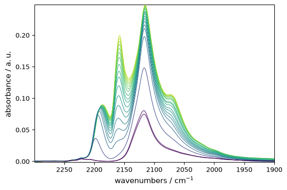
Find maxima by manual inspection of the plot
Once a given maximum has been approximately located manually with the mouse, it is possible to obtain its exact position.
For instance, after zooming in on the highest peak of the last spectrum, one finds that it is located at ~ 2115.5 cm\(^{-1}\). The exact x-coordinate value can be obtained using the following code (see the Slicing tutorial for more information):
[6]:
pos = reg.x[2115.5].values
pos
[6]:
We can easily get the list of all individual maxima at this position.
[7]:
maxima = reg[:, pos].squeeze()
_ = maxima.plot(marker="s", ls="--", color="blue")
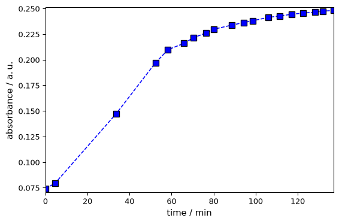
[8]:
ax = reg.plot()
x = pos.max()
y = maxima.max()
ax.set_ylim(-0.01, 0.3)
_ = ax.annotate(
f"{x: ~0.2fP} {y: ~.3fP}",
xy=(x.m, y.m), # ← CRITICAL
xytext=(30, -20),
textcoords="offset points",
bbox={"boxstyle": "round4,pad=.7", "fc": "0.9"},
arrowprops={"arrowstyle": "->", "connectionstyle": "angle3"},
)
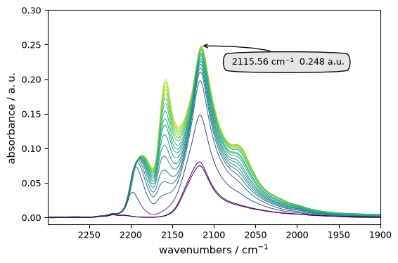
Find maxima with an automated method: find_peaks()
Exploring the spectra manually is useful, but it cannot be done systematically for large datasets with many, possibly shifting, peaks. The maxima of a given spectrum can be found automatically by the find_peaks() method, which is based on scipy.signal.find_peaks(). It returns two outputs: peaks, an NDDataset grouping the peak maxima (wavenumbers and absorbance), and properties, a dictionary
containing properties of the returned peaks. The dictionary is empty if no particular option is selected; see below for more information.
Default behavior
Applying this method to the last spectrum without any option yields 7 peaks. However, some peaks are very close, so we use the distance option to avoid this.
[9]:
last = reg[-1]
peaks, _ = last.find_peaks(distance=5.0)
# we do not catch the second output (properties) as it is void in this case
On spectra with linear coordinates, spacing-related constraints can also be expressed with physical units. For example, the following call is equivalent to the previous one:
[10]:
peaks_units, _ = last.find_peaks(distance="5 cm^-1")
peaks_units.x.values
[10]:
| Magnitude | [2266.372 2220.446 2186.058 2157.805 2115.083 2073.144] |
|---|---|
| Units | cm-1 |
peaks is an NDDataset. Its x attribute gives the peak position:
[11]:
peaks.x.values
[11]:
| Magnitude | [2266.372 2220.446 2186.058 2157.805 2115.083 2073.144] |
|---|---|
| Units | cm-1 |
The code below shows how the peaks found by this method can be marked on the plot:
[12]:
ax = last.plot_pen() # output the spectrum on ax; ax will receive the next plot too
pks = peaks + 0.02 # add a small offset to the y position of the markers
_ = pks.plot_scatter(
ax=ax,
marker="v",
color="black",
clear=False, # we need to keep the previous output on ax
data_only=True, # we do not need to redraw labels and similar elements
ylim=(-0.01, 0.35),
)
for p in pks:
x, y = p.x.values, p.values + 0.02
_ = ax.annotate(
f"{x.m: 0.0f}",
xy=(x.m, y.m),
xytext=(-5, 0),
rotation=90,
textcoords="offset points",
)
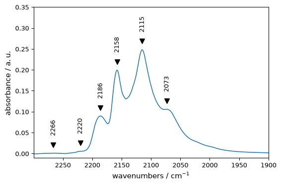
Now we will perform peak finding for the whole dataset:
[13]:
peakslist = [s.find_peaks(distance=5)[0] for s in reg]
[14]:
ax = reg.plot()
for peaks in peakslist:
_ = peaks.plot_scatter(
ax=ax,
marker="v",
ms=3,
color="red",
clear=False,
data_only=True,
ylim=(-0.01, 0.30),
)
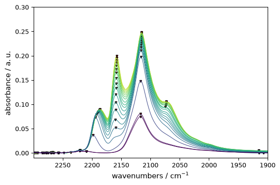
It should be noted that this method finds only true maxima, not shoulders. Detecting such underlying peaks requires methods based on derivatives or more advanced detection techniques, which will be treated in a separate tutorial. Once the maxima of a given peak have been found, it is possible, for instance, to plot their evolution with time. This is illustrated below for peaks located at 2220-2180 cm\(^{-1}\):
[15]:
# Find peak's position
positions = [s.find_peaks(distance=5)[0].x.values for s in reg[:, 2220.0:2180.0]]
# Make a NDDataset
evol = scp.NDDataset(positions, title="wavenumber at the maximum")
evol.x = scp.Coord(
reg.y, title="acquisition time"
) # the x coordinate is set to the acquisition time for each spectrum
# plot it
_ = evol.plot(ls=":")
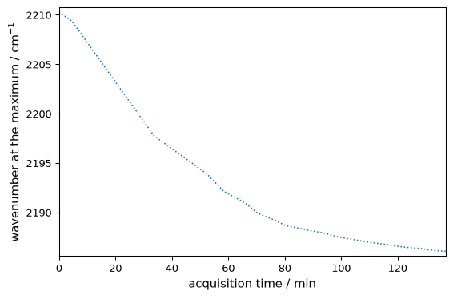
Options of find_peaks()
The default behavior of find_peaks() is to return all detected maxima. The user can choose various options to select among these peaks:
Parameters relative to “peak intensity”: - height : minimal required height of the peaks (single number) or minimal and maximal heights (sequence of two numbers) - prominence : minimal prominence of the peak to be detected (single number) or minimal and maximal prominence (sequence of 2 numbers). In brief, the “prominence” of a peak measures how much a peak stands out from its surrounding and is the vertical distance between the peak and its lowest “contour line”. It should not be
confused with the height as a peak can have an important height but a small prominence when surrounded by other peaks (see below for an illustration). - in addition to the prominence, the user can define wlen , the width (in points) of the window used to look at neighboring minima, with the peak maximum at the center of the window. - threshold : a single number (the minimal required threshold) or a sequence of two numbers (minimal and maximal). The thresholds are the difference of height
of the maximum with its two neighboring points (useful to detect spikes for instance)
Parameters relative to “peak spacing”: - distance : the required minimal horizontal distance between neighbouring peaks. Smaller peaks are removed first. On a linear coordinate axis it can be given either in points or in coordinate units, e.g. distance="10 cm^-1". - width : Required minimal width of peaks or minimal and maximal width. The width is assessed from the peak height, prominence and neighboring signal. On a linear coordinate axis, width can be passed either in
points or in coordinate units, e.g. width=5 * ur("cm^-1"). - In addition the user can define rel_height (a float between 0. and 1.) used to compute the width - see the scipy documentation for further details. - Finally, we mention one last parameter, plateau_size(), used for selecting peaks with truly flat tops (as in square-shaped signals, for example). As for distance and width,
wlen and plateau_size can also be expressed in coordinate units when the axis is linear.
Coordinate-aware spacing constraints currently assume a linear axis. On strongly non-linear coordinates, use plain point counts by setting use_coord=False.
The use of some of these options for the last spectrum of the dataset is illustrated below:
[16]:
s = reg[-1].squeeze()
We use squeeze() because one of the dimensions of this dataset, which has shape (1, N), is unnecessary.
[17]:
# default settings
peaks, properties = s.find_peaks()
ax = s.plot_pen(color="black")
_ = peaks.plot_scatter(
ax=ax,
label="default",
marker="v",
ms=4,
color="black",
clear=False,
data_only=True,
ylim=(-0.01, 0.35),
)
# find peaks higher than 0.05 (NB: the spectra are shifted for the display.
# Refer to the 1st spectrum for true heights)
peaks, properties = s.find_peaks(height=0.05)
color = "blue"
label = "0.05<height"
offset = 0.05
_ = (s + offset).plot_pen(color=color, clear=False)
_ = (peaks + offset).plot_scatter(
ax=ax, label=label, m="v", mfc=color, mec=color, ms=5, clear=False, data_only=True
)
# find peaks heights between 0.05 and 0.2 (the highest peak won't be detected)
peaks, properties = s.find_peaks(height=(0.05, 0.2))
color = "green"
label = "0.05<height<0.2"
offset = 0.1
_ = (s + offset).plot_pen(color=color, clear=False)
_ = (peaks + offset).plot_scatter(
ax=ax, label=label, m="v", mfc=color, mec=color, ms=5, clear=False, data_only=True
)
# find peaks with prominence >= 0.05 (only the two most prominent peaks are detected)
peaks, properties = s.find_peaks(prominence=0.05)
color = "purple"
label = "prominence=0.05"
offset = 0.15
_ = (s + offset).plot_pen(color=color, clear=False)
_ = (peaks + offset).plot_scatter(
ax=ax, label=label, m="v", mfc=color, mec=color, ms=5, clear=False, data_only=True
)
# find peaks with distance >= 10 (only the highest of the two maxima at ~ 2075 is
# detected)
peaks, properties = s.find_peaks(distance=10)
color = "red"
label = "distance>10"
offset = 0.20
_ = (s + offset).plot_pen(color=color, clear=False)
_ = (peaks + offset).plot_scatter(
ax=ax, label=label, m="v", mfc=color, mec=color, ms=5, clear=False, data_only=True
)
# The same constraint can be written with explicit coordinate units.
peaks_units, _ = s.find_peaks(distance="10 cm^-1")
peaks_units.x.values
[17]:
| Magnitude | [2266.372 2220.446 2186.058 2157.805 2115.083 2073.144] |
|---|---|
| Units | cm-1 |
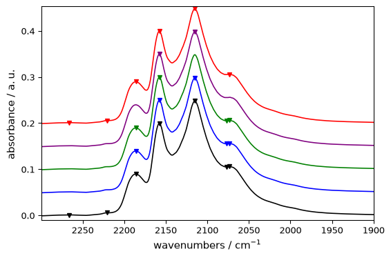
[18]:
# find peaks with width >= 10 (none of the two maxima at ~ 2075 is detected)
peaks, properties = s.find_peaks(width=10)
color = "grey"
label = "width>10"
offset = 0.25
_ = (s + offset).plot_pen(color=color, clear=False)
_ = (peaks + offset).plot_scatter(
ax=ax, label=label, m="v", mfc=color, mec=color, ms=5, clear=False, data_only=True
)
_ = ax.legend(fontsize=6)
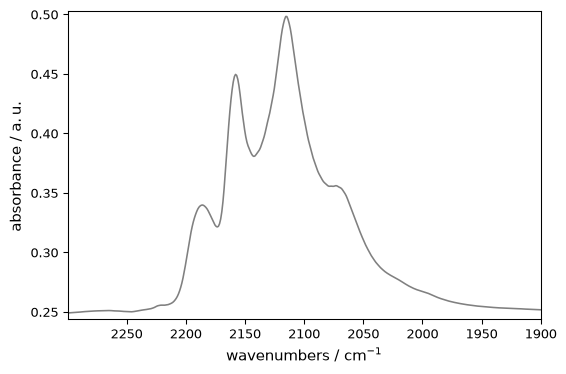
More on peak properties
If the concept of “peak height” is pretty clear, it is worth examining further some peak properties as defined and used in find_peaks() . They can be obtained (and used) by passing the parameters height , prominence , threshold and width . Then find_peaks() will return the corresponding properties of the detected peaks in the properties dictionary.
Prominence
The prominence of a peak can be defined as the vertical distance from the peak’s maximum to the lowest horizontal line passing through a minimum but not containing any higher peak. This is illustrated below for the three most prominent peaks of the above spectra:
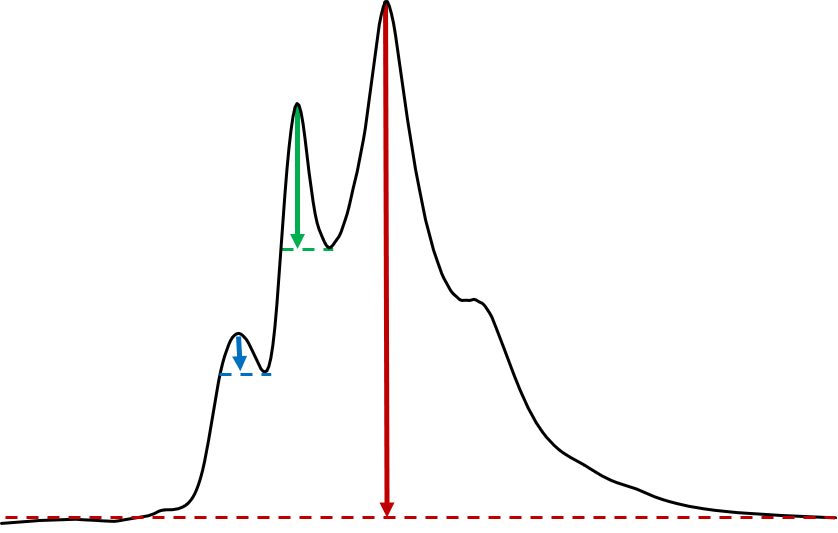
- Let’s illustrate this for the second-highest peak which height is comprised between
0.15 and 0.22 and see which properties are returned when, on top of
height, we passprominence=0: this will return the properties associated to the prominence and warrant that this peak will not be rejected on the prominence criterion.
[19]:
peaks, properties = s.find_peaks(height=(0.15, 0.22), prominence=0)
properties
[19]:
{'peak_heights': [<Quantity(0.199456453, 'absorbance')>],
'prominences': [<Quantity(0.0689001083, 'absorbance')>],
'left_bases': [<Quantity(2299.734, '1 / centimeter')>],
'right_bases': [<Quantity(2142.562, '1 / centimeter')>]}
The actual prominence of the peak is this 0.0689, a value significantly lower that is peak height ( [markdown] The peak prominence is 0.0689, a much lower value than the height (0.1995), as could be expected by the illustration above.
The algorithm used to determine the left and right ‘bases’ is illustrated below: - (1) extend a line to the left and right of the maximum until it reaches the window border (here on the left) or the signal (here on the right). - (2) find the minimum value within the intervals defined above. These points are the peak’s bases. - (3) use the higher base (here the right base) and peak maximum to calculate the prominence.

The following code shows how to plot the maximum and the two “base points” from the previous output of find_peaks():
[20]:
ax = s.plot_pen()
# plots the maximum
_ = peaks.plot_scatter(
ax=ax, marker="v", mfc="green", mec="green", data_only=True, clear=False
)
wl, wr = properties["left_bases"][0], properties["right_bases"][0]
# wavenumbers of left and right bases
for w in (wl, wr):
ax.axvline(w.m, linestyle="--") # add vertical line at the bases
_ = ax.plot(w, s[w].data, "v", color="red")
# and a red mark #TODO: add function to plot this easily
ax = ax.set_xlim(2310.0, 1900.0) # change x limits to better see the 'left_base'
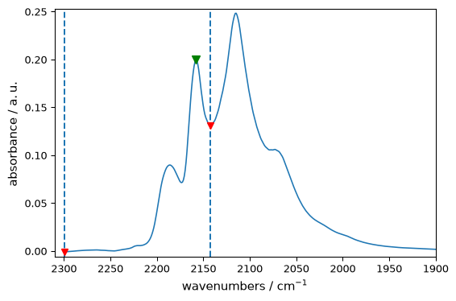
It leads to base marks at their expected locations. We can further check that the prominence of the [markdown] We can check that the correct value of the peak prominence is obtained by the difference between its height and the highest base, here the ‘right_base’:
[21]:
prominence = peaks[0].values - s[wr].values
print(f"calc. prominence = {prominence: 0.4f}")
calc. prominence = 0.0690 absorbance
Finally, we illustrate how the use of the wlen parameter - which limits the search of the “base [markdown] Finally, the figure below shows how the prominence can be affected by wlen , the size of the window used to determine the peaks’ bases.
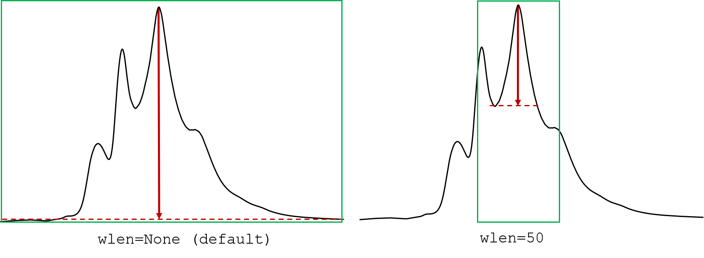
As illustrated above a reduction of the window should reduce the prominence of the peak. This impact can be checked with the code below:
[22]:
peak, properties = s.find_peaks(height=0.2, prominence=0)
print(f"prominence with full spectrum: {properties['prominences'][0]: 0.4f}")
peak, properties = s.find_peaks(
height=0.2, prominence=0, wlen=50.0
) # a float should be explicitly passed, else will be considered as points
print(f"prominence with reduced window: {properties['prominences'][0]: 0.4f}")
prominence with full spectrum: 0.2465 absorbance
prominence with reduced window: 0.1161 absorbance
Width
The peak widths, as returned by find_peaks() can be very approximate and for precise assessment, The find_peaks() method also returns the peak widths. As we will see below, the method is very approximate and more advanced methods (such as peak fitting), also implemented in spectrochempy should be used (see e.g., :ref:examples-gallery). On the other hand, the magnitude of the width is generally fine.
This estimate is based on an algorithm similar to that used for the “bases” above, except that the horizontal line starts from a width_height computed from the peak height subtracted by a fraction of the peak prominence defined bay rel_height (default = 0.5). The algorithm is illustrated below for the two most prominent peaks:

When the width keyword is used, properties dictionary returns the prominence parameters (as it is used for the calculation of the width), the width and the left and right interpolated positions (“ips”) of the intersection of the horizontal line with the spectrum:
[23]:
peaks, properties = s.find_peaks(height=0.2, width=0)
properties
[23]:
{'peak_heights': [<Quantity(0.248123825, 'absorbance')>],
'prominences': [<Quantity(0.246501869, 'absorbance')>],
'left_bases': [<Quantity(2299.734, '1 / centimeter')>],
'right_bases': [<Quantity(1899.571, '1 / centimeter')>],
'widths': [<Quantity(75.1600437, '1 / centimeter')>],
'width_heights': [<Quantity(0.12487289, 'absorbance')>],
'left_ips': [<Quantity(2166.05061, '1 / centimeter')>],
'right_ips': [<Quantity(2090.88615, '1 / centimeter')>]}
The code below shows how these heights and widths can be extracted from the dictionary and plotted [markdown] The code below shows how these data can be extracted and then plotted:
[24]:
# extraction of data (for better readability of the code below)
height = properties["peak_heights"][0]
width_height = properties["width_heights"][0]
wl = properties["left_ips"][0]
wr = properties["right_ips"][0]
ax = s.plot_pen()
_ = peaks.plot_scatter(
ax=ax, marker="v", mfc="green", mec="green", data_only=True, clear=False
)
_ = ax.axhline(height, linestyle="--", color="blue")
_ = ax.axhline(width_height, linestyle="--", color="red")
_ = ax.axvline(wl.m, linestyle="--", color="green")
_ = ax.axvline(wr.m, linestyle="--", color="green")
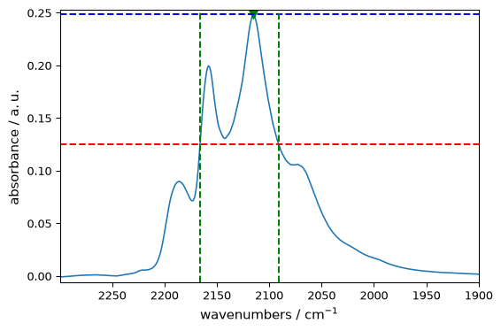
As stressed above, we see here that the peak width is very approximate and probably exaggerated in It is obvious here that the peak width is overestimated in the present case due to the presence of the second peak on the left. Here a better estimate would be obtained by considering the right half-width, or reducing the rel_height parameter as shown below.
A code snippet to display properties
The self-contained code snippet below can be used to display in a matplotlib plot and print the various peak properties of a single peak as returned by find_peaks():
[25]:
# user defined parameters ------------------------------
s = reg[-1] # define a single-row NDDataset
# peak selection parameters; should be set to return a single peak
height = 0.08 # minimal height or min and max heights)
prominence = 0.0 # minimal prominence or min and max prominences
width = 0.0 # minimal width or min and max widths
threshold = None # minimal threshold or min and max threshold)
# prominence and width parameter
wlen = None # the length of the window used to compute the prominence
rel_height = 0.47 # the fraction of the prominence used to compute the width
# code: find peaks, plot and print properties -------------------
peaks, properties = s.find_peaks(
distance=10,
height=height,
prominence=prominence,
wlen=wlen,
threshold=threshold,
width=width,
rel_height=rel_height,
)
table_pos = " ".join([f"{peaks[i].x.value.m: >10.3f}" for i in range(len(peaks))])
print(f"{'peak_position (cm⁻¹)': >26}: {table_pos}")
for key in properties:
table_property = " ".join(
[f"{properties[key][i].m: >10.3f}" for i in range(len(peaks))]
)
title = f"{key: >.16} ({properties[key][0].u: ~P})"
print(f"{title: >26}: {table_property}")
ax = s.plot()
_ = peaks.plot_scatter(
ax=ax, marker="v", mfc="green", mec="green", data_only=True, clear=False
)
for i in range(len(peaks)):
for w in (properties["left_bases"][i], properties["right_bases"][i]):
_ = ax.plot(w, s[0, w].data.T, "v", color="red")
for w in (properties["left_ips"][i], properties["right_ips"][i]):
ax.axvline(w.m, linestyle="--", color="green")
peak_position (cm⁻¹): 2186.058 2157.805 2115.083 2073.144
peak_heights (a.u.): 0.090 0.199 0.248 0.106
prominences (a.u.): 0.018 0.069 0.247 0.001
left_bases (cm⁻¹): 2299.734 2299.734 2299.734 2075.064
right_bases (cm⁻¹): 2173.417 2142.562 1899.571 1899.571
widths (cm⁻¹): 12.746 10.622 47.240 1.968
width_heights (a.u.): 0.081 0.167 0.132 0.106
left_ips (cm⁻¹): 2191.975 2162.881 2140.474 2074.135
right_ips (cm⁻¹): 2179.230 2152.257 2093.232 2072.167
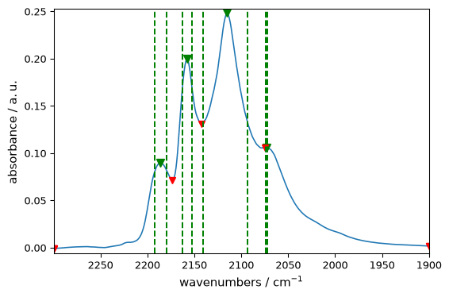
– this is the end of this tutorial –